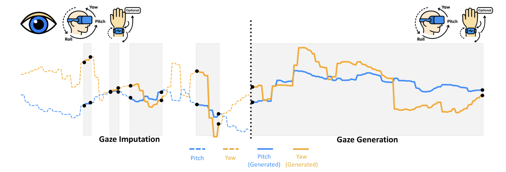

HAGI++: Head-Assisted Gaze Imputation and Generation
Chuhan Jiao, Zhiming Hu*, Andreas Bulling
IEEE Transactions on Visualization and Computer Graphics (TVCG), 2026. Accepted for publication.

Abstract
Mobile eye-tracking is crucial for capturing human visual attention in real-world and XR settings, supporting research and human-computer interaction. Yet blinks, pupil-detection errors and lighting changes create missing values that hinder gaze analysis. We present HAGI++, a multi-modal diffusion-based imputation method that, for the first time, leverages integrated head-orientation sensors to exploit the natural correlation between head and eye movements. Using a transformer-based diffusion model, it learns cross-modal dependencies between eye and head data and can additionally incorporate wrist/hand motion when such wearable signals are available. Evaluations on the large-scale Nymeria, Ego-Exo4D and HOT3D datasets show that HAGI++ consistently outperforms traditional interpolation and deep-learning time-series imputation baselines. Statistical analysis confirms that its gaze-velocity distributions closely match real human behaviour, yielding realistic imputations. Even when 100% of gaze data are missing (pure gaze generation), HAGI++ exceeds methods that rely on visual inputs and methods that rely on full-body motion capture by incorporating wrist motion from commercial wearables. Our approach enables more complete, accurate eye-gaze recordings in real-world contexts, enhancing gaze-based analysis and interaction across many applications.Links
Paper: paper.pdf
BibTeX
@article{jiao2026hagiplusplus,
author = {Jiao, Chuhan and Hu, Zhiming and Bulling, Andreas},
title = {HAGI++: Head-Assisted Gaze Imputation and Generation},
journal = {IEEE Transactions on Visualization and Computer Graphics},
year = {2026}}